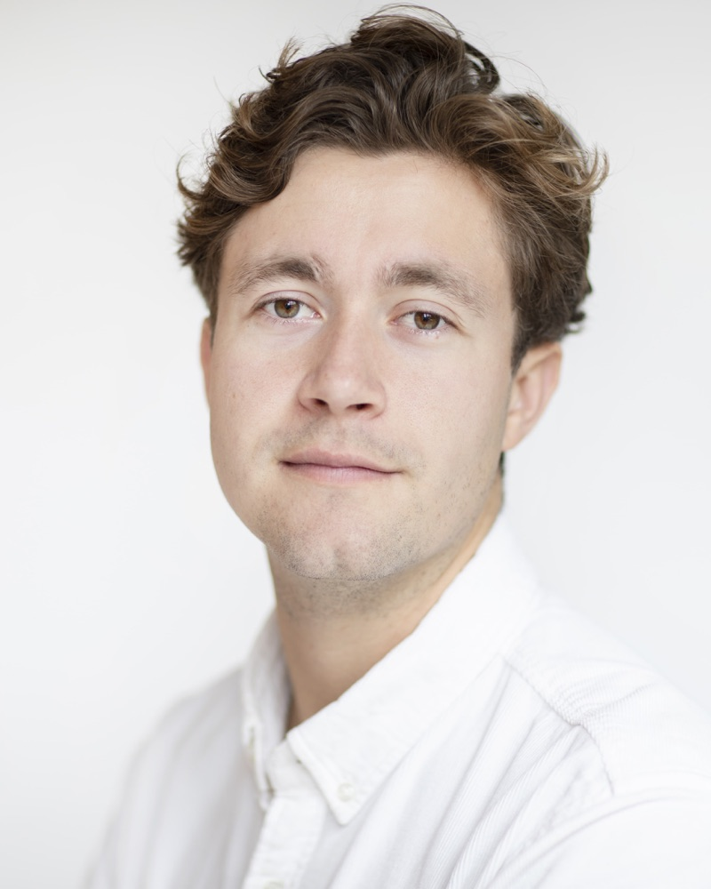

I develop filtering, prediction and smoothing methods for time series models with time-varying parameters, with applications in financial economics. My PhD is supervised by Dick van Dijk and Rutger-Jan Lange. In the fall of 2025 I visited the Department of Statistics at Harvard University as a Fulbright Scholar, hosted by Neil Shephard.
On the 2026–2027 academic job market.
